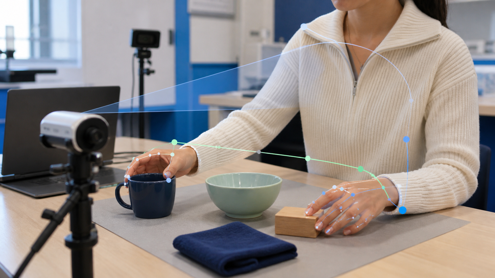
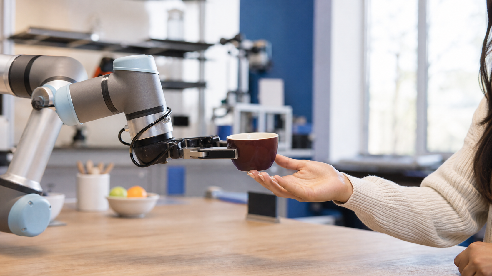

Brains Bots and Behavior (B3) Lab
Learning from human data for embodied intelligence.
We bring together disciplines across observational and interactive learning to develop embodied systems that can reason about people, learn from their interactions, and operate around them.
Research
Human behavior as a foundation for intelligent action.
Watch
Learning From Human Data
Models that learn from demonstrations, video, motion, gaze, language, and interaction traces to capture the what, how, and why of human interactions.

Understand
Behavior Understanding
Representations for goals, intent, preferences, affordances, and context in everyday behavior, for enabling multimodal predictions.
Predict
Embodied Prediction
Forecasting human motion, object changes, scene variations through structured predictive models so that AI systems know how and when to assist humans.

Act
Robots Around People
Closing the loop from learned predictive models to physical systems capable of dexterous and long-horizon mobile manipulation while acting with awareness of people, tasks, uncertainty, and shared spaces.
People
Principal Investigator
Homanga Bharadhwaj
Assistant Professor of Computer Science
Johns Hopkins University
PhD Students
BS / MS Students
PhD Student Collaborators
Videos
Video highlights of past research from the PI connecting human video, prediction, and robot action.
Publications
arXiv 2026
MotionForesight: Re-purposing Video Models for Future 3D Scene-Flow Prediction
Homanga Bharadhwaj*, Yash Jangir*.
RSS 2026
Functional Force-Aware Retargeting from Virtual Human Demos to Soft Robot Policies
Uksang Yoo, Mengjia Zhu, Evan Pezent, Jom Preechayasomboon, Jean Oh, Jeffrey Ichnowski, Amir Memar, Ben Abbatematteo, Homanga Bharadhwaj, Ashish Deshpande, Harsha Prahlad.
arXiv 2026
Dexterous Manipulation Policies from RGB Human Videos via 3D Hand-Object Trajectory Reconstruction
Hongyi Chen, Tony Dong, Tiancheng Wu, Liquan Wang, Yash Jangir, Yaru Niu, Yufei Ye, Homanga Bharadhwaj, Zackory Erickson*, Jeffrey Ichnowski*.
ECCV 2026
ObjectForesight: Predicting Future 3D Object Trajectories from Human Videos
Rustin Soraki, Homanga Bharadhwaj*, Ali Farhadi*, Roozbeh Mottaghi*.
ECCV 2026
Walk through Paintings: Ego-centric World Models from Internet Priors
Anurag Bagchi, Zhipeng Bao, Homanga Bharadhwaj, Yu-Xiong Wang, Pavel Tokmakov, Martial Hebert.
ECCV 2026
Flowing from Reasoning to Motion: Learning 3D Hand Trajectory Prediction from Egocentric Human Interaction Videos
Mingfei Chen, Yifan Wang, Zhengqin Li, Homanga Bharadhwaj, Yujin Chen, Chuan Qin, Ziyi Kou, Yuan Tian, Eric Whitmire, Rajinder Sodhi, Hrvoje Benko, Eli Shlizerman, Yue Liu.
ICRA 2026
Dexterity from Smart Lenses: Multi-Fingered Robot Manipulation with In-the-Wild Human Demonstrations
Irmak Guzey, Haozhi Qi, Julen Urain, Changhao Wang, Jessica Yin, Krishna Bodduluri, Mike Lambeta, Lerrel Pinto, Akshara Rai, Jitendra Malik, Tingfan Wu, Akash Sharma, Homanga Bharadhwaj.
ICRA 2026
DemoDiffusion: One-Shot Human Imitation using pre-trained Diffusion Policy
Sungjae Park, Homanga Bharadhwaj, Shubham Tulsiani.
IROS 2026
SPIDER: Scalable Physics-Informed DExterous Retargeting
Chaoyi Pan, Changhao Wang, Haozhi Qi, Zixi Liu, Homanga Bharadhwaj, Akash Sharma, Tingfan Wu, Guanya Shi, Jitendra Malik, Francois Hogan.
IROS 2026
Web2Grasp: Learning Functional Grasps from Web Images of Hand-Object Interactions
Hongyi Chen, Yunchao Yao*, Yufei Ye, Homanga Bharadhwaj, Jiashun Wang, Shubham Tulsiani, Zackory Erickson, Jeffrey Ichnowski.
TMLR 2025
HandsOnVLM: Vision-Language Models for Hand-Object Interaction Prediction
Chen Bao, Jiarui Xu, Xiaolong Wang*, Abhinav Gupta*, Homanga Bharadhwaj*.
CoRL 2025
Gen2Act: Human Video Generation in Novel Scenarios enables Generalizable Robot Manipulation
Homanga Bharadhwaj, Debidatta Dwibedi, Abhinav Gupta, Shubham Tulsiani, Carl Doersch, Ted Xiao, Dhruv Shah, Fei Xia, Dorsa Sadigh, Sean Kirmani.
ECCV 2024
Track2Act: Predicting Point Tracks from Internet Videos Enables Diverse Zero-shot Manipulation
Homanga Bharadhwaj, Roozbeh Mottaghi*, Abhinav Gupta*, Shubham Tulsiani*.
ICRA 2024
RoboAgent: Towards Sample Efficient Robot Manipulation with Semantic Augmentations and Action Chunking
Homanga Bharadhwaj*, Jay Vakil*, Mohit Sharma*, Abhinav Gupta, Shubham Tulsiani, Vikash Kumar.
ICRA 2024
Towards Generalizable Zero-Shot Manipulation via Translating Human Interaction Plans
Homanga Bharadhwaj, Abhinav Gupta*, Vikash Kumar*, Shubham Tulsiani*.
ICLR 2023
Simplifying Model-based RL: Learning Representations, Latent-space Models and Policies with One Objective
Raj Ghugare, Homanga Bharadhwaj, Benjamin Eysenbach, Sergey Levine, Ruslan Salakhutdinov.
ICRA 2023
Visual Affordance Prediction for Guiding Robot Exploration
Homanga Bharadhwaj, Abhinav Gupta, Shubham Tulsiani.
ICLR 2022
Information Prioritization Through Empowerment in Visual Model-based RL
Homanga Bharadhwaj, Mohammad Babaeizadeh, Dumitru Erhan, Sergey Levine.
IROS 2021
Learning by Watching: Physical Imitation of Manipulation Skills from Human Videos
Haoyu Xiong, Quanzhou Li, Yun-Chun Chen, Homanga Bharadhwaj, Samarth Sinha, Animesh Garg.
ICRA 2021
Continual Model-Based Reinforcement Learning with Hypernetworks
Philip Huang, Kevin (Cheng) Xie, Homanga Bharadhwaj, Florian Shkurti.
ICLR 2021
Conservative Safety Critics for Exploration
Homanga Bharadhwaj, Aviral Kumar, Nicholas Rhinehart, Sergey Levine, Florian Shkurti, Animesh Garg.
ICLR 2021
Latent Skill Exploration for Planning and Transfer
Kevin (Cheng) Xie*, Homanga Bharadhwaj*, Danijar Hafner, Animesh Garg, Florian Shkurti.
News
B3 Lab website is launched.
Contact Us
Thank you for your interest in our lab.
For research-related inquiries, please reach out to Prof. Homanga Bharadhwaj.
Joining B3
Information for prospective lab members and visitors
The Google Form link will appear here when it is added to the site configuration.